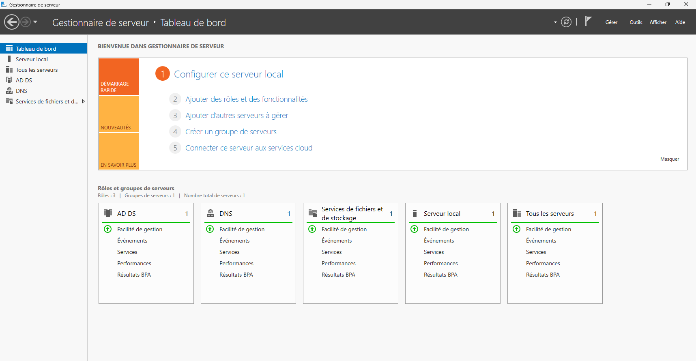

Virtualisation réseau & Windows Server
DNS 10%
DHCP 20%
AD DS 20%
Windows Server 25%
Packet Tracer 25%
Technologies utilisées
DHCP
DNS
- Cisco Packet Tracer — Logiciel de simulation de réseaux
- Windows Server — Système d'exploitation serveur
- Active Directory — Service d'annuaire
- VMware — Plateforme de virtualisation
- DHCP — Service d'attribution d'adresses IP
- DNS — Service de résolution de noms

Réseau Cisco Packet Tracer
Réseau 1 — 192.168.1.0- Adressage IP géré dynamiquement par un serveur DHCP
- Adressage géré par le routeur
- 2 VLANs — OpenSpace1 et OpenSpace2
- Routage inter-VLAN configuré sur le routeur
- Serveur DNS servant d'annuaire réseau

VM Windows Server
Déploiement serveur- Installation de Windows Server sous VMware
- Création d'une forêt AD DS : TEST_foret_domain
- DNS intégré à l'annuaire Active Directory
- Création d'un dossier partagé pour les tests d'accès
Active Directory
Structuration en lien avec les VLANs- Une OU par VLAN — OpenSpace1, OpenSpace2, Administration…
- Des groupes de sécurité correspondant à chaque zone
- Des objets Ordinateur dans chaque OU pour simuler les postes clients
Gestion des permissions NTFS
Groupe DEV- Lecture, modification et suppression sur les dossiers DEV
- Accès en lecture seule sur les fichiers Administration
- Accès en lecture seule sur les fichiers DEV
- Contrôle total sur les dossiers Administration